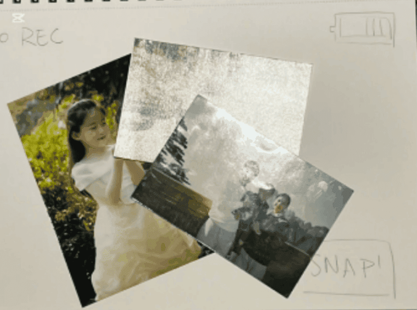
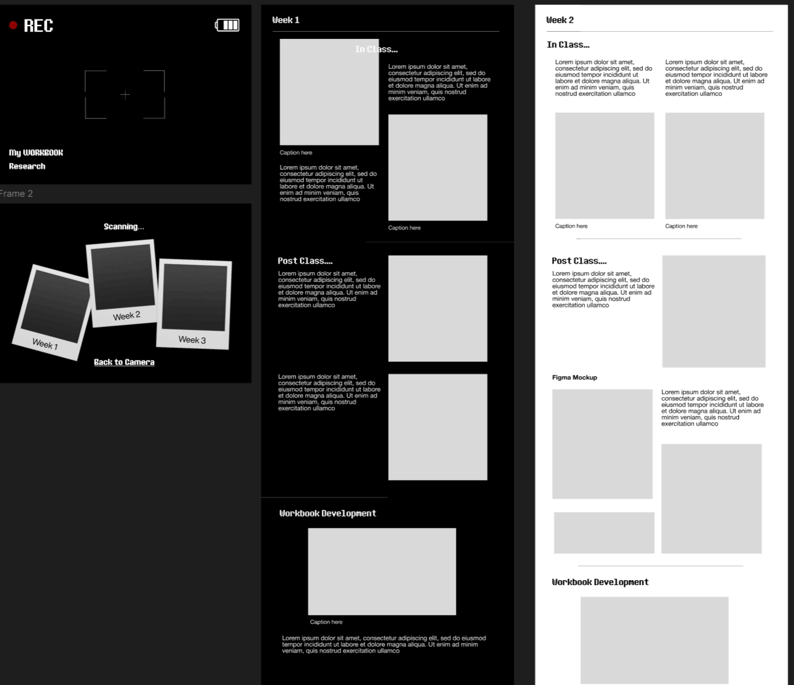
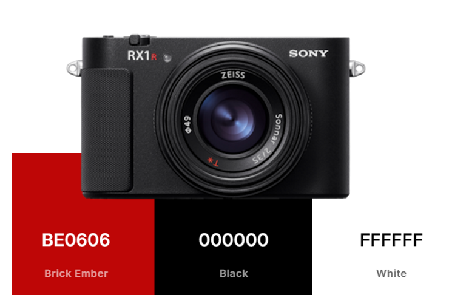

After class, I wanted to do another low fidelity paper prototype for my other idea with the digital camera interaction. As I didn’t have as much materials as before during class, I used my photos that I had at home to simulate the animation I intended to create.

Low fidelty mockup made at home of another ideaDevelopment: Figma Mockup + Wireframes + Colour Palette


For the development of my workbook, I started constructing my intended design in Figma. At this point I had settled on the idea that I would be continuing with my digital camera idea and this stage ultimately helped me plan out the layout of my pages as well as create some assets, such as the battery and REC on the main camera page, which I could later download as images to implement on the actual page. (as shown on the VSCode screenshot below)
In this stage, I also considered what colour palette I wanted for my workbook. I settled on the simple colours of black, white and red to reference the details of an actual digital camera.